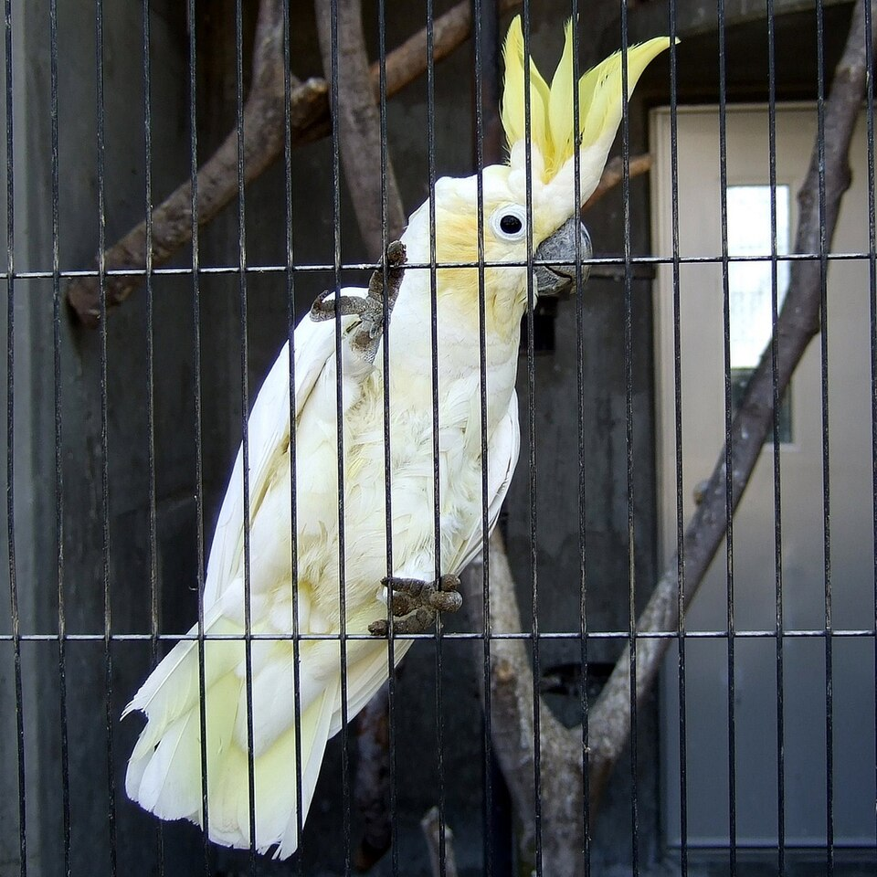

DOKUMEN LAPORAN UTAMA
[Tulis paragraf pembuka di sini. Longform biasanya dibuka dengan adegan: satu momen, satu tempat, satu orang. Misalnya saat kamu pertama kali menemukan akun penjual.]
[Paragraf lanjutan. Ganti teks ini dengan hasil reportasemu.]
Bab 1: Etalase di Media Sosial
[Jelaskan bagaimana burung ditawarkan: platform apa, bagaimana bahasa promosinya, bagaimana transaksi berlangsung.]
[Kutipan narasumber yang paling kuat ditaruh di sini.] — Nama narasumber, jabatan/peran

Bab 2: Dari Hutan ke Jabodetabek
[Telusuri rantai pasok: asal burung, pengepul, pengiriman.]
Bab 3: Hukum dan Penegakannya
[Jelaskan aturan yang berlaku, dan tanggapan pihak berwenang. Pastikan nama undang-undang dan pasalnya kamu verifikasi dari sumber resmi.]
Penutup
[Tutup dengan kembali ke adegan awal atau satu pertanyaan yang tersisa.]